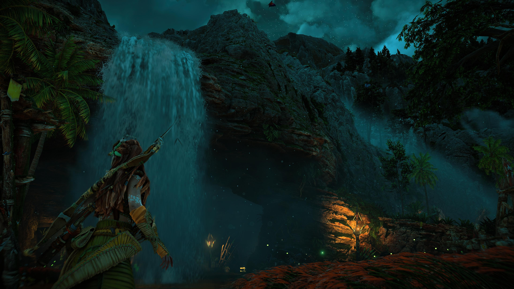
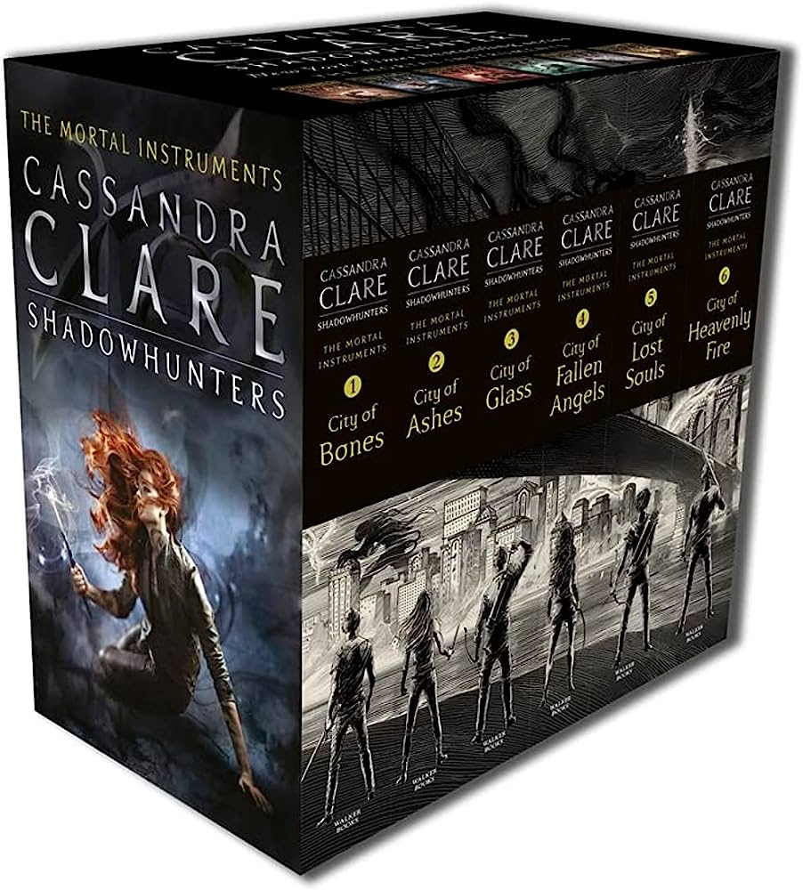

18.11.29.jpg)
Com mais de 27 anos que dispensa aprensentações, sou mineira da gema (mas que não é adepta a tomar café), nascida em BH na Maternidade Odete Valadares.
Já passei pelos caminhos artisticos, administrativos, controlando informações e dados de estoques ou até mesmo os organizando, zelando pela segurança no local de trabalho, e atendendo cordialmente as pessoas, pra ter as forças renovadas ao me deparar com o Front-end.
Agora oficialmente me considero uma desenvolvedora Front-end em estudos ♥
E por falar de mim, existem itens primordiais pra saber quem é a Lorrayne!
Músicas que mais gosto
Escuto de tudo um pouco mas o meu top 5 é todinho da banda britânica Bring Me The Horizon, gosto tanto da banda que é dificil escolher uma só música, por isso vamos classificar a ordem de amor pelos albuns lançados.
-
Sempiternal
-
There is a hell i've seen it. There is a heaven let's keep it a secret

-
Post Human: Survivor Horror

-
That's the spirit

-
Amo

Top 5 Bring Me The Horizon

Como todo mineiro, fui criada dentro da cozinha, seja dos meus pais, tias e tios ou avós e avôs, boa conversa e sorrisos são nosso tempero especial. Não tem como resistir quando...
- Lasanha do meu pai Dario
- Salpicão da minha mãe Meire
- Tropeiro das minhas tias
- Churrasco com meus amigos
- Torta de amendoim da Vó Dira
- Pão de queijo de Vô Tião
- Feijão com sal do Vô jacaré
...tem momentos especiais e comida boa!
São uma prova e trás só lembrança boa!!!
E claro que não poderia faltar as preferências geeks, seja séries, filmes, jogos ou livros, eles entraram pra lista por deixarem sua marca e virarem favs no meu coração!
- How I Met Your Mother
- Good Omens
- The Good Place
- The Expendables (todos os filmes da franquia)
- Death Stranding
- Horizon (Zero Dawn e Forbidden West) 
- Harry Potter
- The Mortal Instruments 
- Assassin's Creed
- Cells at Work
- My Hero Academia
- Iruma's Kun
- Spy x Family
- Buddy Daddies
Fechando com chave de ouro!